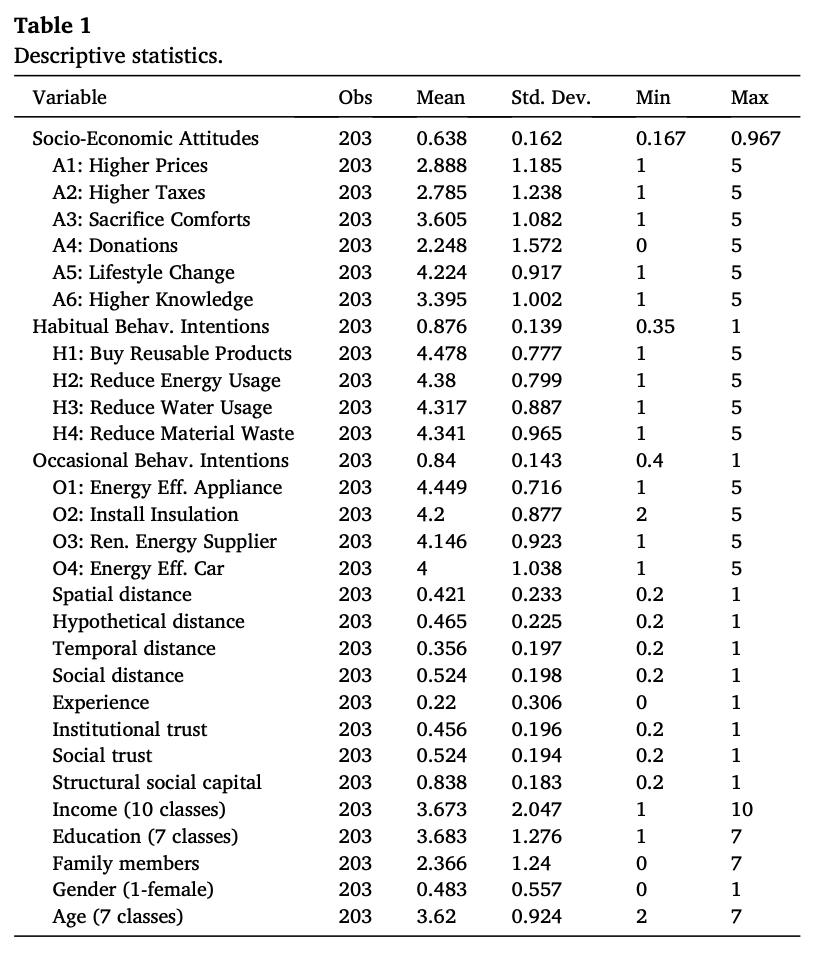
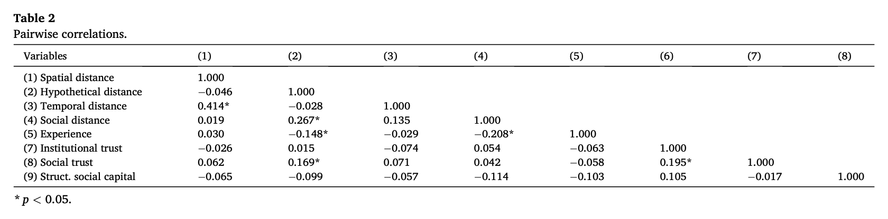
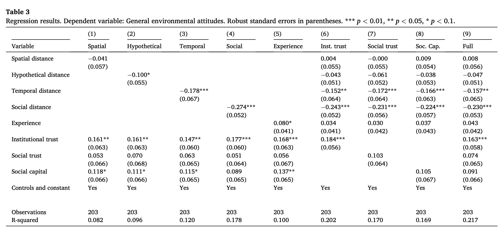
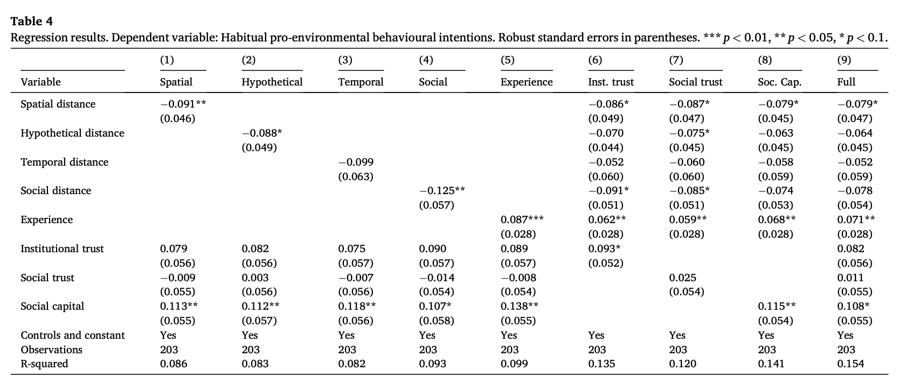
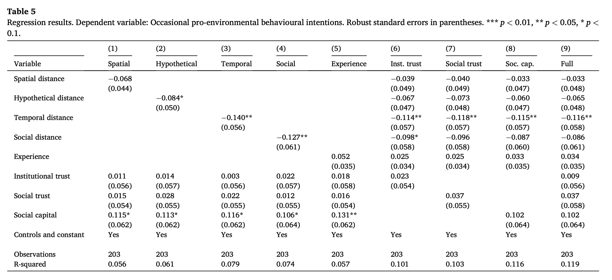
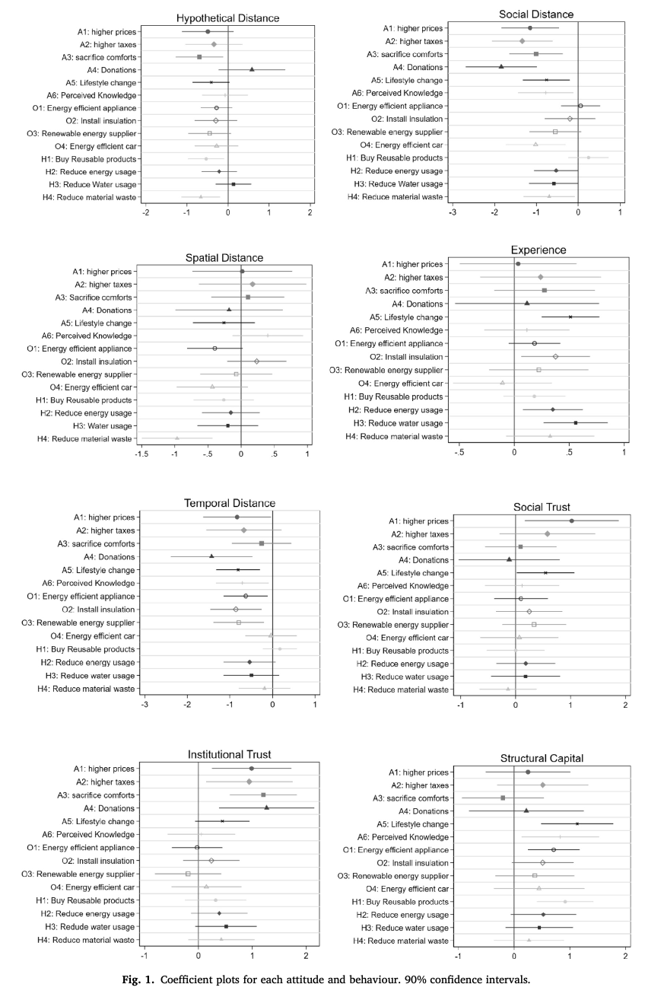
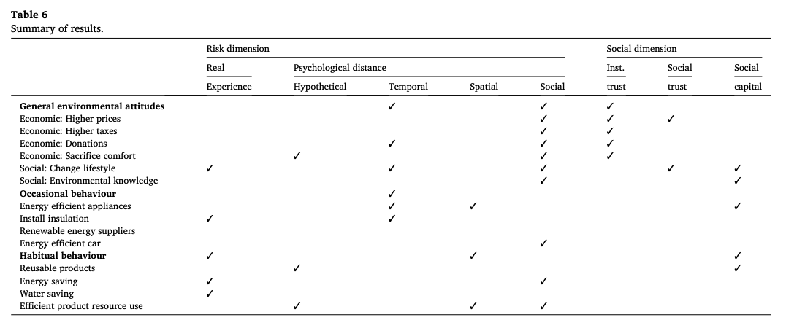
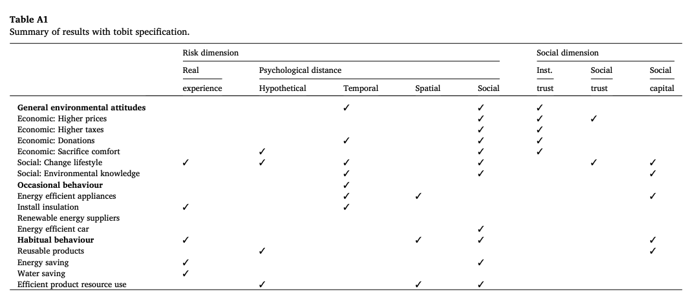
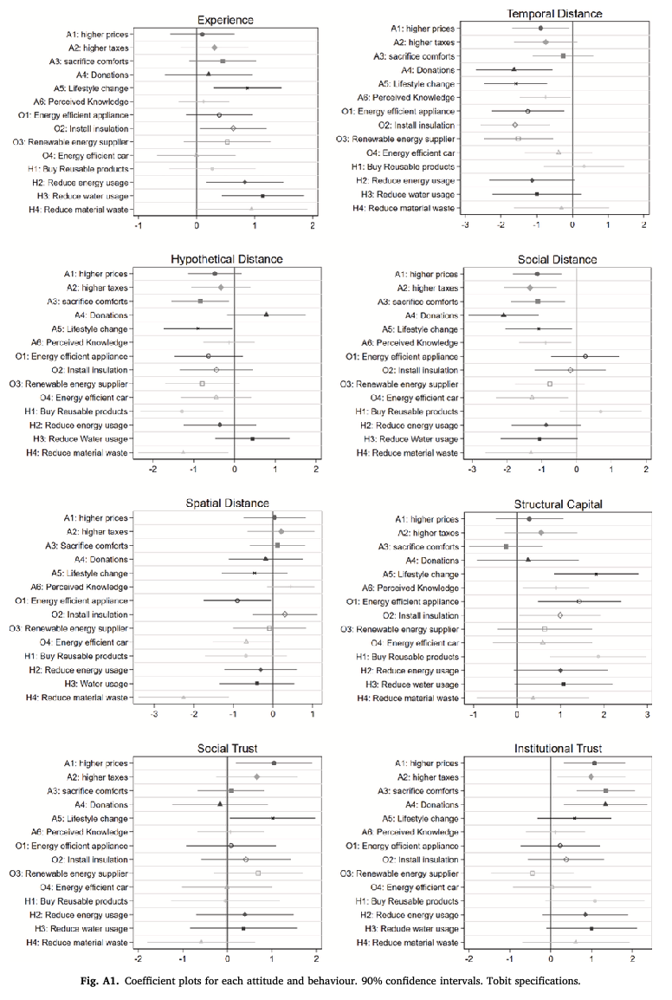
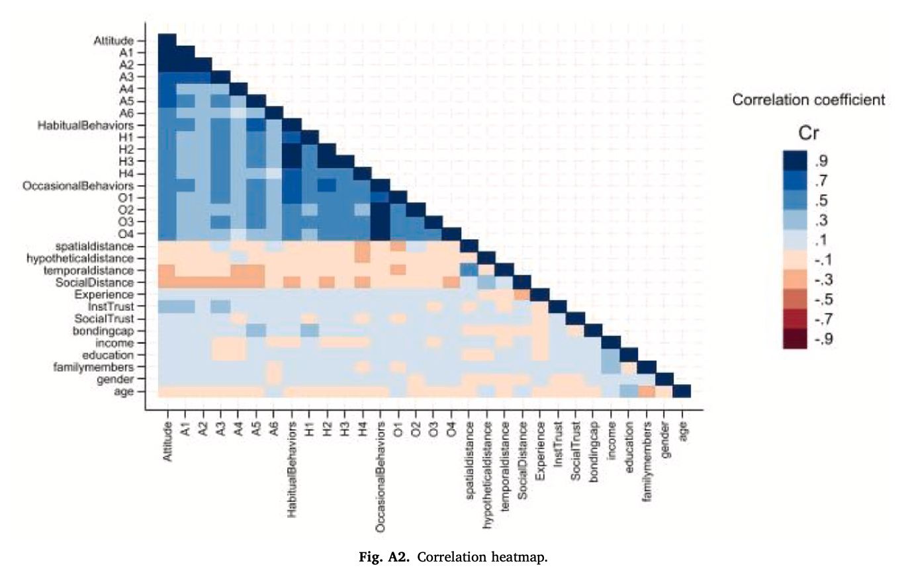

00
Part 0
温故知新
先回顾上学期核心概念，再说明本节如何把这些概念运用于一篇真实论文。
心理距离、社会因素与三类绿色行为
先回顾上学期核心概念，再说明本节如何把这些概念运用于一篇真实论文。
上学期行为经济学核心概念。
约 100 分钟通读 Caferra et al. (2026)。
从描述统计到 Tobit 稳健性。
政策含义、局限与延伸。
三类行为分类与 nudge 设计。
填写 reading_summary 并交回。
L1 课题设定 + 行为经济学入门
L2 理论精读（本文）
L3 在线实验设计 · L4 文献综述 · L5–6 实验搭建 · L7 数据清洗 · L8 初步分析 · L9 可视化 · L10 答辩
Homo Economicus 完全理性；行为经济学以有限理性和系统性偏差修正之。
Prospect Theory：损失的痛苦 > 同等收益的快乐，即 V(x) < |V(−x)|。
时间不一致性：近期权重高于远期。承诺机制用于对抗意志力薄弱。
个体除自利外亦关注公平与互惠；独裁者博弈中多数人分给陌生人 20%–30%。
改变选择架构引导行为，不改变激励。默认选项是典型实例。
实验室 / 实地 / 在线三类。本文使用在线问卷调查（Prolific 平台）。
冰淇淋销量 vs 鲨鱼袭击；遗漏变量是气温。Corr = Causal + Selection Bias。
随机化打破选择偏差，是因果推断的标准方法。
| 论文中的概念 | 上学期对应 | 对应行为 |
|---|---|---|
| 时间距离 Temporal distance | Present bias | 偶发绿色投资 |
| 社会距离 Social distance | Social preferences / in-group bias | 日常习惯 + 经济态度 |
| 灾害经历 Experience | Loss aversion 的延伸 | 节约/降耗行为 |
| "Proximising" 政策 | Nudge | 政策落地 |
| 横截面观察数据 | 相关 ≠ 因果 | 方法论局限 |
论文基本信息、核心主张、主要发现与整体结构。
Shades of Green Behaviour under Heterogeneous Subjective Risk and Social Domains
Rocco Caferra (Bari) · Andrea Morone (Bari & CIAS) · Piergiuseppe Morone (UnitelmaSapienza & CIAS)
Ecological Economics 244 (2026), Article 108976
10.1016/j.ecolecon.2026.108976
意大利 Prolific 在线调查，2024 年 1 月，N = 203；横截面多元回归 + Tobit 稳健性（非实验）。
总体态度：愿付高价、愿交税、愿捐款。
日常习惯：关灯、节水、避免过度包装。
偶发投资：节能电器、太阳能板、新能源车。
环保政策需按行为类型分类设计，而非采用统一干预。
→ 与日常节约型行为关联
→ 与经济支持意愿关联
→ 与偶发绿色投资关联
制度信任 + 社会资本
Construal Level Theory 的四个维度、真实灾害经历与社会维度，共同构成解释框架。
是否会发生？
何时发生？
在何地发生？
影响到谁？
| 维度 | 核心问题 | 对应行为偏见 |
|---|---|---|
| Hypothetical | 事件是否会发生？ | 假设偏差；概率误判 |
| Temporal | 事件何时发生？ | 当下偏差 present bias |
| Spatial | 事件在何地发生？ | 空间乐观偏差 |
| Social | 事件影响谁？ | 群体内偏差 in-group bias；社会偏好 |
受访者对"气候变化是否真的会发生"的判断。越怀疑，距离越远。
对"气候变化属于未来"的判断。越推至未来，距离越远。
对应上学期 present bias 在环境议题的应用。
对"气候变化主要影响地理上遥远地区"的判断。
对"受影响的是他人而非自己或家人"的判断。
对应 in-group / out-group 偏见。
个人 ↔ 制度
个人 ↔ 同侪
| 类别 | 含义 | 经济特征 |
|---|---|---|
| General attitudes | 对环保的总体态度与支持意愿 | 价值层面的偏好倾向 |
| Habitual behaviour | 日常习惯（关灯、节水、自带购物袋） | 高频、低成本、嵌入生活方式 |
| Occasional behaviour | 偶发大额投资（装保温、买新能源车） | 低频、高成本、跨期投资品 |
风险感知越高（心理距离越近、亲身经历越深），环保承诺越强。
社会偏好越强（信任越高、社会资本越厚），环保承诺越强。
Prolific 在线样本、Likert 量表测量、关键变量，以及观察性数据与 RCT 的本质差别。
研究者随机分配 treatment，两组在统计上等同，差异 = 因果效应。
研究者只观察受访者的心理距离与社会特征，无干预。
分别代入 general attitudes、habitual、occasional 三个指标。
因变量为有界 Likert 合成，存在 corner solutions（多数受访者答 5/5）。Tobit 显式建模这种截断。
从描述统计到主回归、系数图，再到 Tobit 稳健性，逐张图表完成精读。
| 术语 | 含义 |
|---|---|
| 系数 β | 自变量每升 1 单位，Y 平均变化 β 单位。负号 = 距离越远，环保行为越少（与假说一致）。 |
| (括号内)标准误 | 系数估计的不确定性。括号内数值远小于系数，表明估计较精确。 |
| 显著性星号 | * p<0.10；** p<0.05；*** p<0.01。星号越多，结果由偶然因素产生的概率越低。 |
| 90% 置信区间 | Fig. 1 中以横线表示；横线跨过 0 即不显著。 |
| Observations = 203 | 样本量。 |
| R-squared | 模型解释 Y 总变异的比例（0–1）。 |






负值：距离越远，行为/态度越少（符合 Hp1）
正值：该因素越多，行为/态度越多（符合 Hp2）
不显著（竖直虚线为参考）
估计越精确


Table A1（Tobit summary）

Fig. A1（Tobit coef. plots）
因变量为 1–5 Likert 合成，存在 corner solutions（多数受访者对所有题项答 5）。OLS 假设因变量连续无界，可能高估或低估真实效应。
Tobit 显式建模有界 censoring。Table 6（OLS）与 Table A1（Tobit）对比：几乎所有 ✓ 位置一致；"Habitual" 行 Social capital 仍显著。
相关热图、因果性边界，以及本文采用的五种互相印证的方法组合。

"让受访者感知气候更近，其环保行为是否会增加？"
经历灾害者更环保，是经历改变行为，还是关注环境者对灾害更敏感？
社会资本高者更环保，是网络塑造价值观，还是环保者主动加入社群？
六个细化结论、政策含义、与上学期概念的整合、研究局限及与相关文献的对比。
利用 社会认同：以"同群体在节水/节能"为信息框架——借助 in-group 偏见。
强调短期收益与近未来影响：对抗 present bias，把"省电费"放显眼处，把"气候影响"由远未来拉至近未来。
建立制度信任：政府透明使用碳税收入，提升公众对加税的支持。
| 上学期概念 | 本文中的对应 | 驱动行为 |
|---|---|---|
| Present bias | Temporal distance | Occasional 投资 |
| Social preferences / in-group bias | Social distance | Habitual + 经济态度 |
| Loss aversion | Direct disaster experience | Curtailment（节约） |
| Nudge | "Proximising" 策略 | 政策落地 |
| Correlation ≠ Causation | 横截面观察数据 | 方法论局限 |
课堂讨论题、从相关到因果的研究升级路径，以及期末项目的种子方向。
回顾过去一周的环保行为，按 attitudes / habitual / occasional 分类。哪类最多？哪类最少？可能的驱动因素是什么？
选一个具体行为（如"室友关空调"）。基于本节结论，设计一个 nudge：使用哪种心理或社会杠杆？预期效果是什么？
若作为审稿人，要求作者补做哪项分析或实验？（例如：RCT、加入时间维度、更换样本国别）
重点：心理距离四维 · 三种绿色行为的差异 · 相关 ≠ 因果。